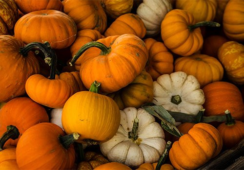

Going to a Pumpkin Patch
this particular outdoor activites is fun and has many different stations
within the area. One of them is picking out your own pumpkin to carve are the halloween
season and you can bring a friend with you if you like and choose pumpkins together!.
The pumpkin patch also includes different types of food stations that you can visit to
get some food if you're feeling hungry. Most of the food is similar to fair food and
if you're not a fan of it you can grab food in the candy station inside where you can also by
a smoothie if you're feeling a bit thristy. Also if you feel more in the mood for a game, you can
head over to the corn maze where you can potentinally get lost in the maze and waste time trying to
find the exit.

Visiting Your Local Starbucks
Something I like to do during the fall season or heading into the Halloween/Spooky Season is visiting Starbucks!.
I understand that it might not be super exciting but tasting this particular brings a lot of joy to me and my day.
I really like the Salted Caramel Mocha from Starbucks because I really like the blend of chocolate, caramel, and coffee mixed together
and topped with whipped cream and salt. You can also try to the other seasonal drinks that shop has to offer!.